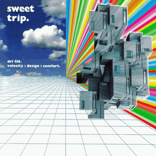
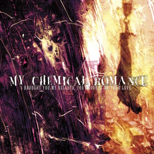
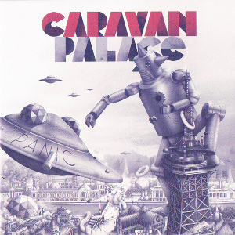
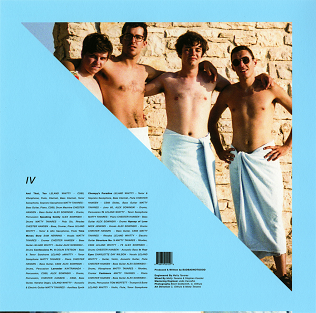
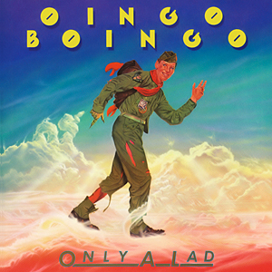
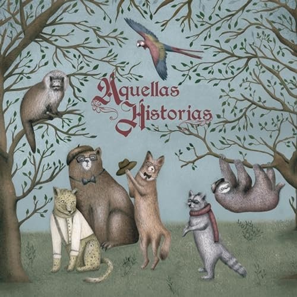
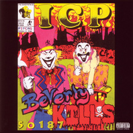
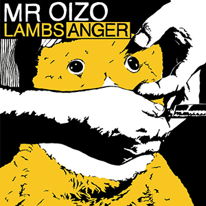

"Velocity: Design: Comfort" by Sweet Trip
Released: June 17, 2003
Genre: IDM, shoegaze

"I Brought You My Bullets, You Brought Me Your Love" by My Chemical Romance
Released: July 23, 2002
Genre: Post-hardcore, emo, punk rock, pop-punk

"Panic" by Caravan Palace
Released: March 5, 2012
Genre: Electro swing, jazz, breakbeat

"IV" by BADBADNOTGOOD
Released: July 8, 2016
Genre: Jazz, hip-hop, electronica, R&B, lounge

"Only a Lad" by Oingo Boingo
Released: June 19, 1981
Genre: New wave, ska

"Aquellas Historias" by Nasa Histoires
Released: November 25, 2020
Genre: Indie rock, jazz rock, folk

"Beverly Kills 50187" by Insane Clown Posse
Released: July 16, 1993
Genre: Hip-hop, horrorcore

"Lambs Anger" by Mr. Oizo
Released: November 17, 2008
Genre: Electronic